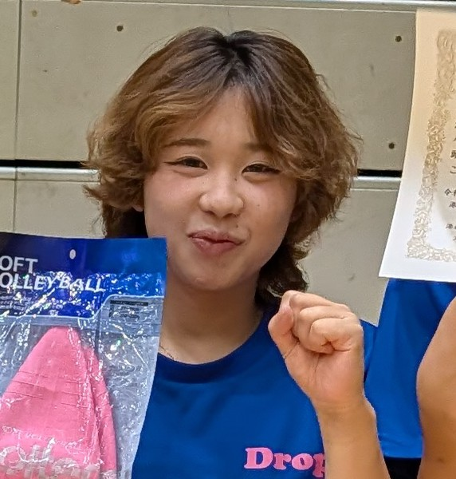
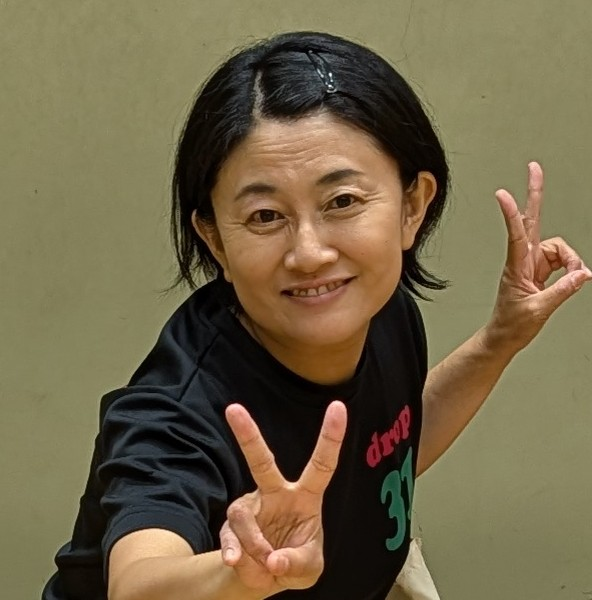
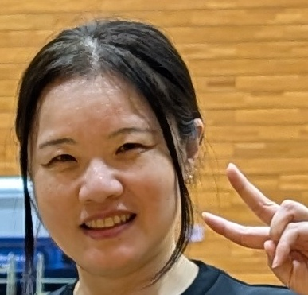
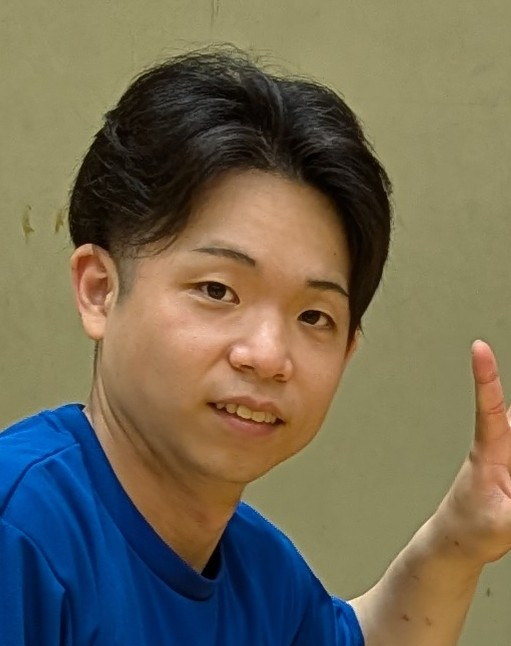
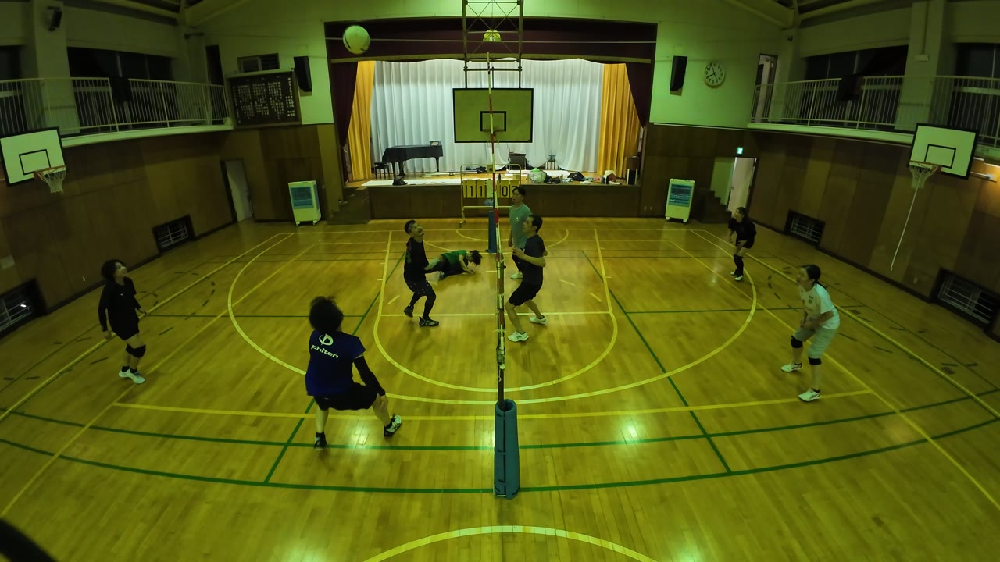
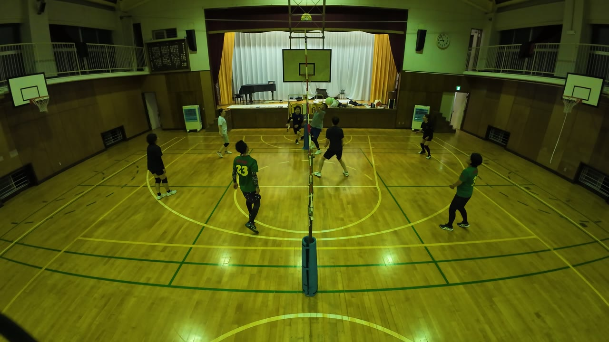
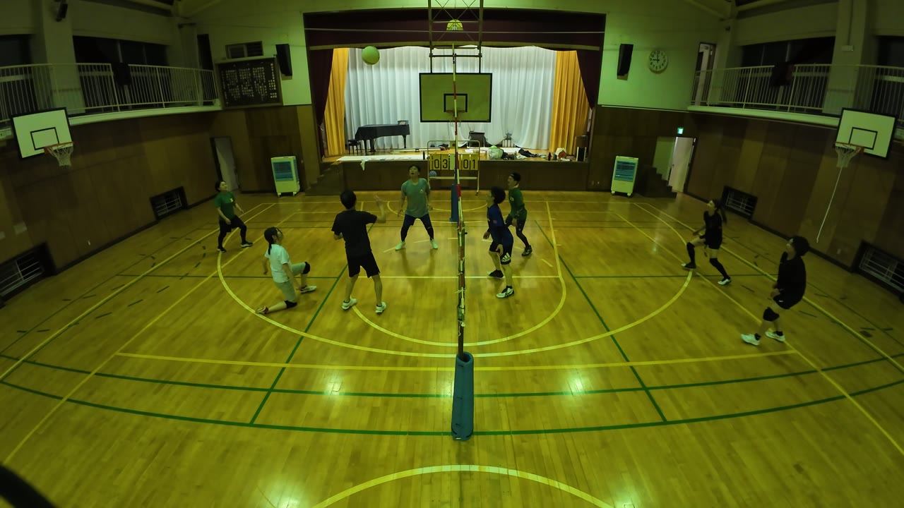
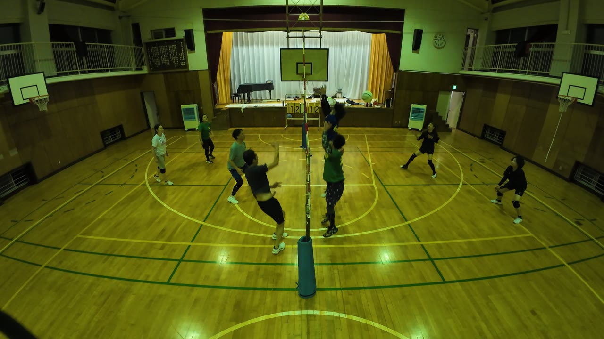
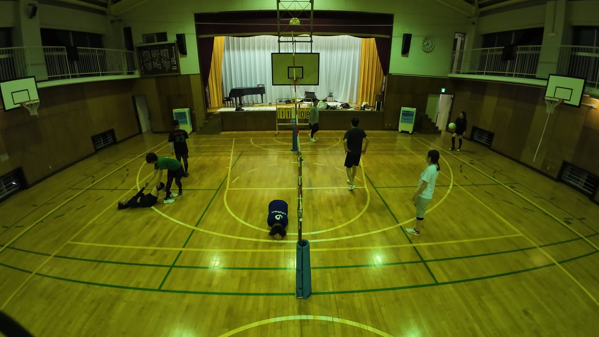
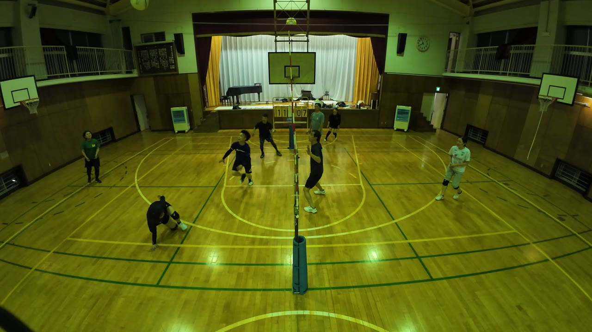

8人で4対4、8試合。この日は拾う人の日でした。長いラリーが何度もあり、そのどれにも、後ろで粘っている人の名前が出てきます。写真をタップすると、その場面から動画が再生されます。
ダイジェスト



この日、いちばん多くのラリーに名前が出た人です。

22:05完璧なレシーブ。みんなが見本にしていい1本です。

1:20:49低く入って、しっかりつないだ1本も。

1:25:28「かずお いけっ」。呼ばれた かずお が、そのままアタックを決めています。

1:33:48あき は1日を通して声を出し続けていました。この一言は、その定番の形です。
相手コートへ返した球がアウトになり、そのまま床に崩れ落ちました。起こしに来たのは ゆりこ です。二人とも笑っています。

22:17この日いちばん球が続いたラリーです。ゆい・ゆりこ・ゆい と拾い続けて、決着は こもりん の返球がアウト。

21:50Produced by けんぴー(AI)